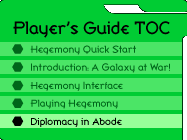

|
Diplomacy in AbodeThe Diplomacy button on the Command Pad of the strategic interface will give you the opportunity to conduct basic diplomacy with other Overlords of the galaxy. However, if you want to discuss strategy with your allies, you will probably want to engage in a live talk, for which Abode is ideal. Abode is a prose-based Chat Theatre which is accessible from the "Play Now" screen under http://hegemony.skotos.net. It will run under Netscape 4.7 (Mac, Windows, or UNIX) or Internet Explorer 5+ (Windows only). The Abode InterfaceOnce you enter Abode you will be presented with the Skotos Chat Theatre client. In the middle of the screen a text window will describe your setting and what is going on. A map window to the right shows your immediate surroundings. Above it pull-down menus allow quick execution of common commands. The Chat Theatre interface is quite powerful, but for the purposes of Abode, you'll probably only need to move around, look at things, and communicate. You can do any of these things by typing imperatives (commands) into the input window under the main text window. Movement in AbodeWhen moving in the cardinal directions you can get around with the arrows that surround the map in your Chat Theatre client window. Currently available exits will appear in a brighter color. They can be clicked to move you in the appropriate direction. You can also move around by typing the appropriate direction as an imperative. For example: north, northeast, or east. Sometimes entering a specific object will also allow movement: enter beam. Finally, on occasion, you may have to open a door to allow for movement: open western door. Perception in AbodeWhenever you enter a room in Abode you will see a short description of the room. You can always see more about a room by typing look or even more by typing examine. You can also investigate singular objects in the game, such as details of a room or even other players. This is done using the same commands: look at ceiling, examine strange rune, look at Rupes. Communication in AbodeThe communication system used in Abode is very sophisticated. At the most basic level you can just say what you want to say, following the say verb with a quoted message:
However, you can also use many different communication verbs, adverbs, prepositions, and direct objects in just about any order that makes sense. Following are a number of allowable types of communication. Experiment in Abode and you'll find most things are allowed:
You can also use different gestures, many of which you can associate with words if you want.
More Help in AbodeFor more help in Abode, type tip or help. Locations in AbodeAbode was created long ago by the Shining Ones and thus its original purpose is not entirely known. However, now it has become a center for diplomacy, planning, and arbitration among the New Races of the galaxy. The following rooms are particularly well-used:
|